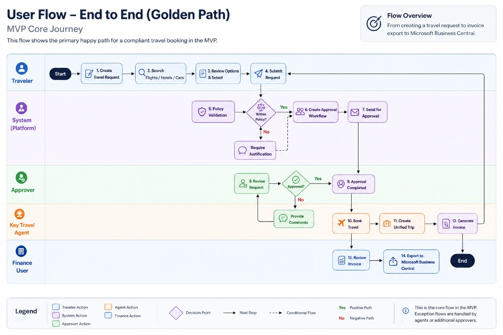

Solution Vision — Key Travel B2B Platform
A self-service travel platform for Key Travel's organisational clients — staff book their own travel within their organisation's rules, requests are approved automatically along the way, and Key Travel's existing booking system does the heavy lifting behind the scenes.
The problem
- Booking today is internal and agent-only — clients phone or email, and Key Travel agents do everything by hand.
- Approvals and invoicing are manual → slow, error-prone, and hard to scale.
- Multi-stage trips (e.g. flight + rail + hotel) are booked across separate systems, with no single "trip" view — as the client noted, agents lack a joint "trip" concept today.
Vision
One self-service platform where client organisations manage their people, travel rules and end-to-end trips — with the right approvals applied automatically and Key Travel's booking system behind the scenes — so travel is booked faster, within the rules, and with far less manual effort on both sides.
Principles
- Reuse, don't rebuild — build on Key Travel's existing booking system.
- Start small, ship fast — deliver the core end-to-end flow first, then add breadth.
- Set up, don't re-program — organisations, rules and approvals are settings, not custom code.
- Safe and private by design — secure login (SSO/MFA), data privacy (GDPR) and an activity log from day one.
Who it's for
| Role |
In a nutshell |
| Traveller |
Requests a trip that follows the rules; tracks its status |
| Travel Arranger |
Books on behalf of colleagues — typically someone from the travel department (or the traveller themselves), not a line manager |
| Approver (levels 1–3) |
Approves requests, with the policy context in front of them — usually a budget-owning manager |
| Organisation Administrator |
Manages their own people (add/remove staff, set roles) |
| Finance |
Handles one central invoice; sends figures to Microsoft Business Central |
| Key Travel Agent |
Sets up and supports client organisations; handles exceptions |
The core journey (MVP)
Request → check against the rules → 1–3 approvals → book → central invoice. Travel that breaks a rule is still allowed with a justification (a gentle nudge, not a hard block) and simply gets an extra approval.
flowchart LR
A["Create request"] --> B["Search options"] --> C["Check the rules"] --> D["1-3 approvals"] --> E["Book"] --> F["Central invoice"]
How approvals adapt to the rules — in-policy trips take the standard path; out-of-policy trips need a justification and pick up one extra approval:
flowchart TD
R["Travel request"] --> C{"Within the rules?"}
C -- "Yes" --> A["Standard approvals (1-3 levels)"]
C -- "No" --> J["Add a justification"] --> X["Extra approval added"] --> A
A --> B["Booked"]
The end-to-end golden path in detail — showing each role's actions, the policy check, the justification branch for out-of-policy travel, and invoice export to Microsoft Business Central:

How it fits together (in plain terms)
- A web app (fully usable on desktop; mobile/tablet-optimized layouts are a fast-follow) backed by behind-the-scenes services for people, rules, trips and money; a native mobile app (iOS/Android) comes later.
- A safe "translator" layer reuses Key Travel's existing booking APIs — booking, changes and cancellations (search-via-API to confirm) — instead of rebuilding them; invoicing is handled by the new platform (no invoicing API) and sent to Microsoft Business Central.
- Biggest unknown: the existing system's connections and documentation are incomplete → we investigate this first, in the discovery week, before finalising the plan.
flowchart LR
U["People and organisations"] --> W["New platform (website + services)"]
W --> T["Safe 'translator' layer"] --> K["Existing booking system"]
W --> BC["Microsoft Business Central"]
Getting organisations & people started
- For the pilot, organisations are set up by hand by Key Travel (single sign-on (SSO), a starter staff list, and — where useful — a welcome email at go-live). This is a manual/internal step, not a built onboarding product; a self-service onboarding flow comes later.
- The organisation's administrator manages their own people; the travel rules, approvals, budgets and system connections are set up by Key Travel in the MVP.
Onboarding at a glance — solid boxes are in the MVP; the dashed items come later:
flowchart TD
subgraph MVP["MVP"]
direction TB
O1["Key Travel sets up the org by hand"] --> O2["Org admin gets access at go-live"]
O2 --> S1["Staff sign in via SSO (auto-created)"]
O2 --> S2["Admin invites people / uploads staff list"]
S1 --> R["Ready: request, approve, book"]
S2 --> R
end
subgraph LATER["Later"]
direction TB
L1["Organisation self-service onboarding"]
L2["Automatic HR-system sync (SCIM/HRIS)"]
end
R -.-> L1
R -.-> L2
How we'll measure success
North-star: more travel booked self-service, within the rules, with far less agent effort.
- Leading indicators (the platform directly moves these; our pilot evidence): self-service completion rate ↑ · agent-hours per booking ↓ · request-to-confirmation time ↓ · booking errors ↓ · request→booking conversion ↑.
- Lagging outcomes (business goals, longer horizon): higher client satisfaction — a quick post-booking rating (CSAT/effort score) plus periodic NPS and pilot interviews · revenue growth — lower cost-to-serve enabling scale, more booking value captured in-channel, and more active organisations.
We capture a "before" baseline in discovery so every metric is measured as a delta. Success-metric events are instrumented from the MVP; charts and dashboards come later.